Photos/Illustrations
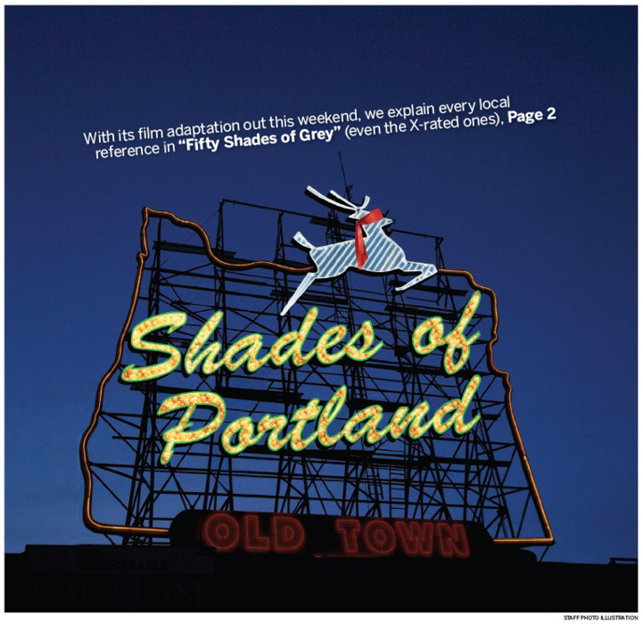
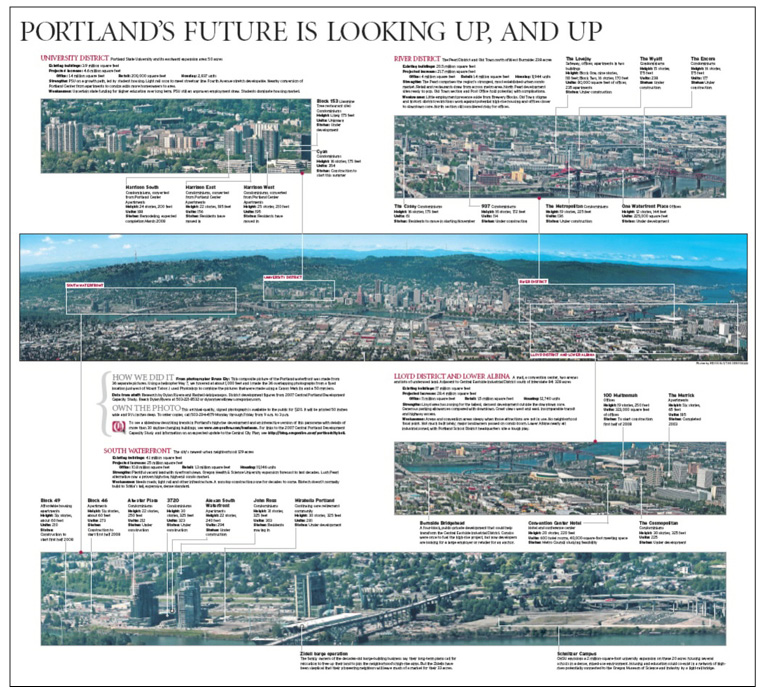
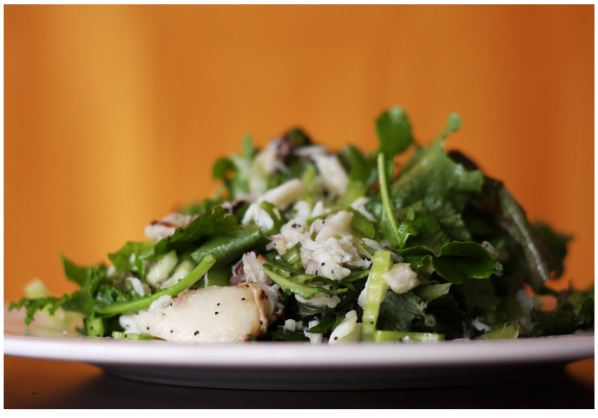
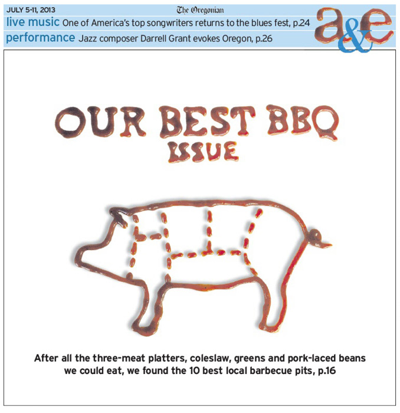
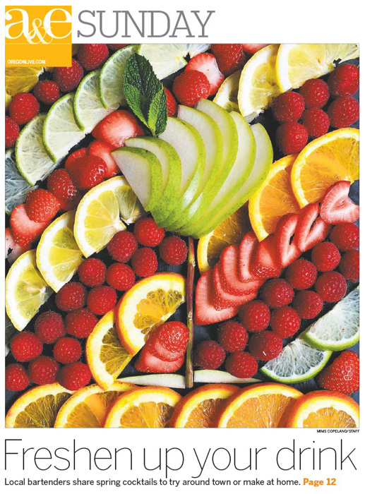
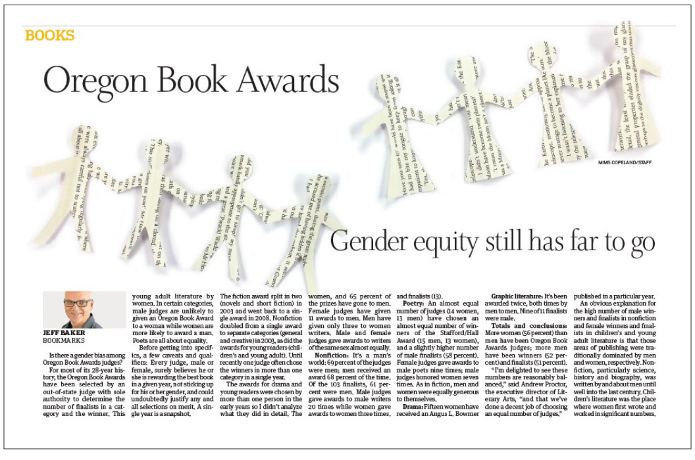
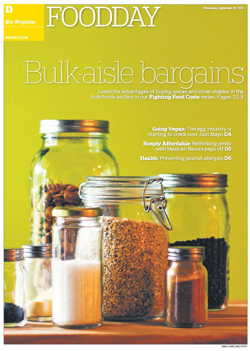
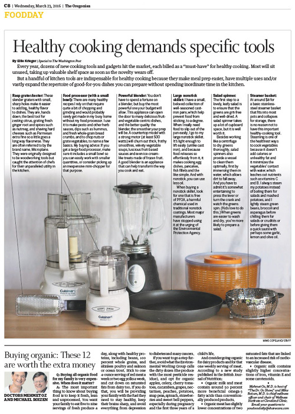
Pages
 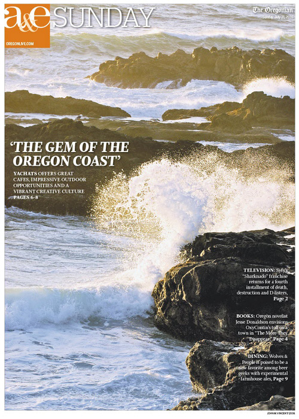
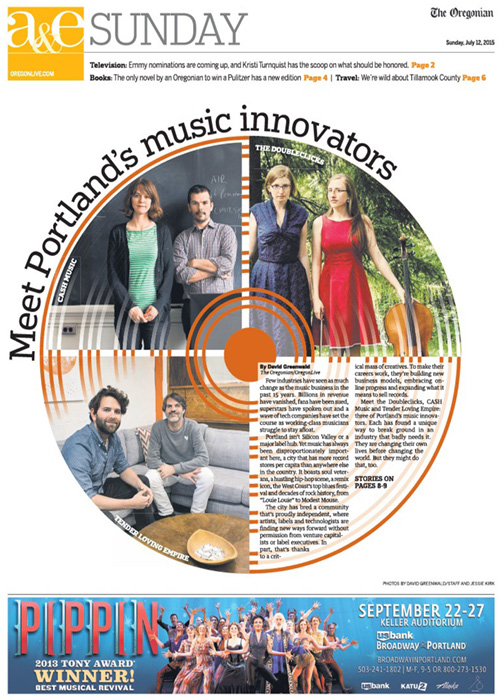
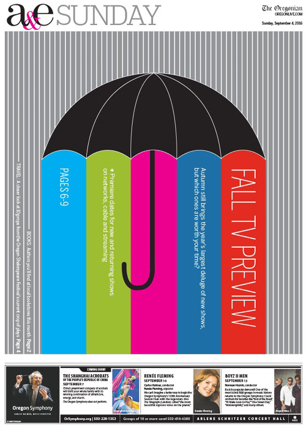
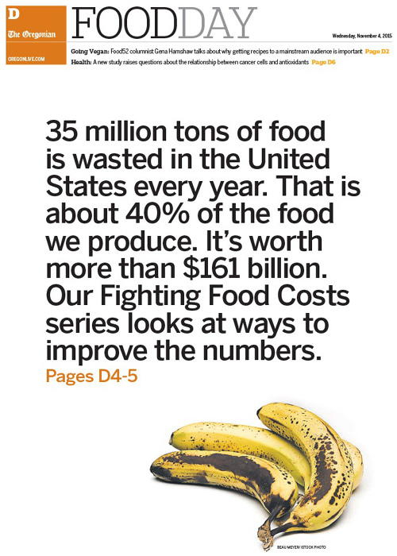
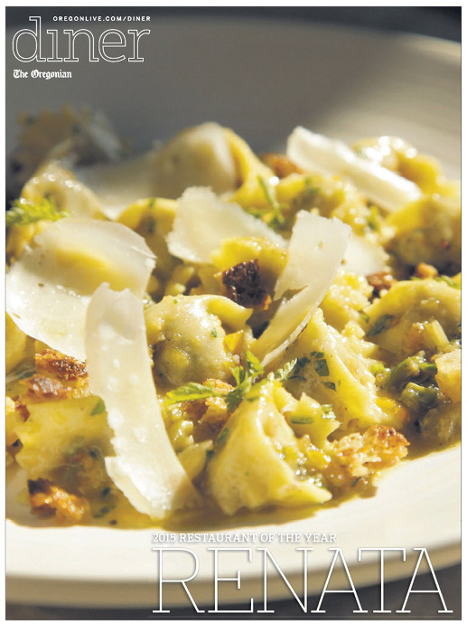
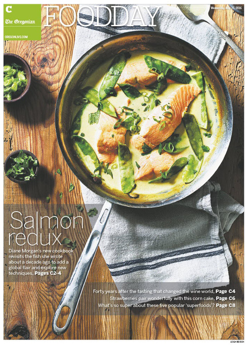
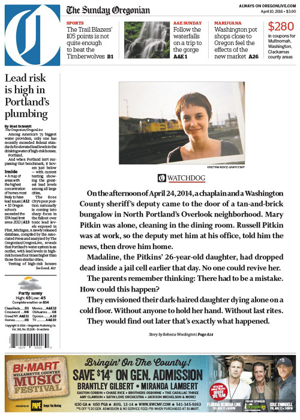
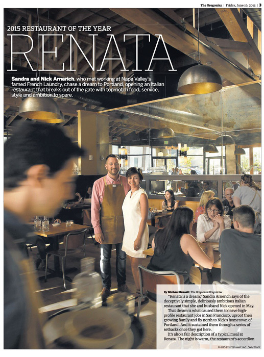
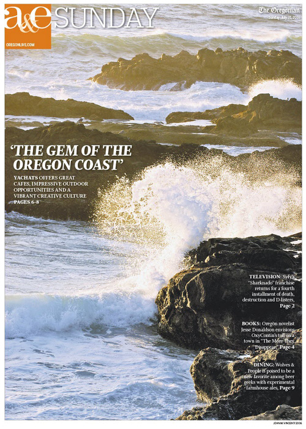
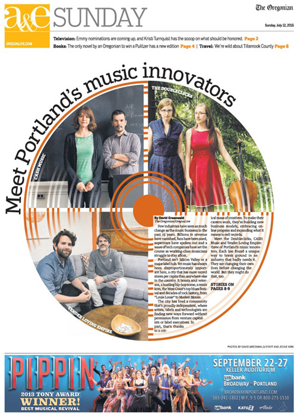
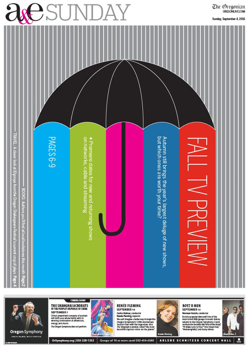
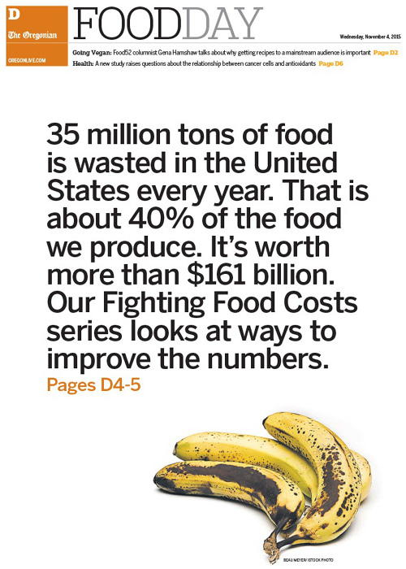
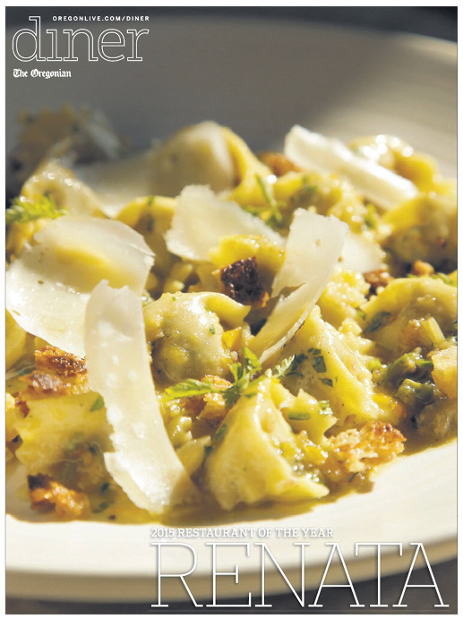
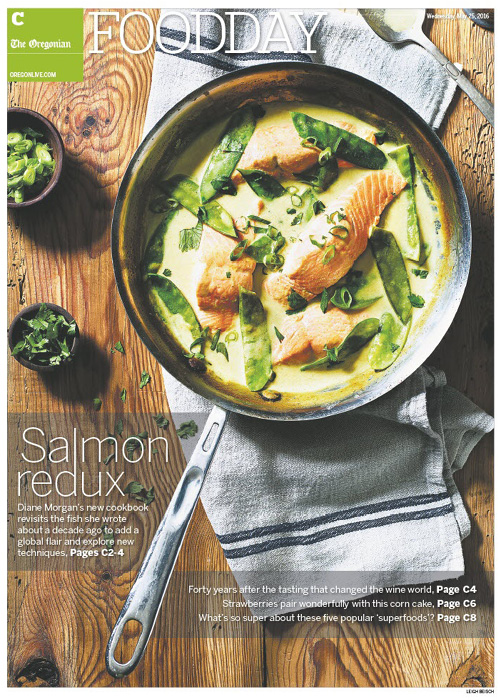
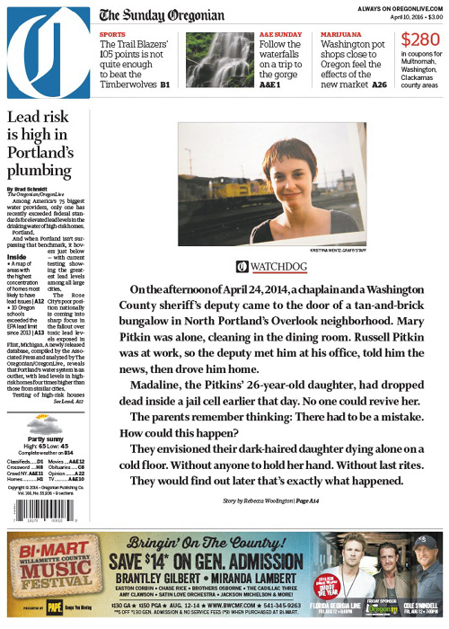
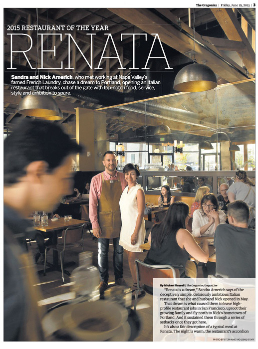
About me
I am a communications professional with a passion for visual storytelling and a wealth of experience in design and editing. An adept problem solver, I am skilled at prioritizing resources and achieving demanding deadlines. I am happiest professionally when I am challenged and able to make a product or a situation better. I love to help other people and thrive in team environments.